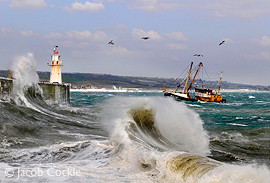
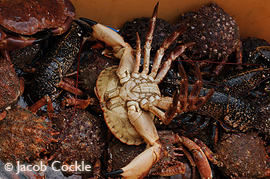

Newlyn- The Fishing Capital of Penwith
Newlyn (Cornish: Lulynn) is a town neighbouring Penzance, it forms part of the civil parish of Penzance. The principal industry in Newlyn is fishing, and the town relies upon its harbour.
The settlement is recorded as Nulyn in 1279 and as Lulyn in 1290, and the name is probably derived from the Cornish for "pool for a fleet of boats".
Prior to the rise of Newlyn as important settlement the landing rights and most property within the Newlyn area was owned by the Manor of Alverton. Newlyn's history has been strongly linked to its role as a major fishing port. The natural protection afforded by the Gwavas Lake (an area of seawater in Mounts Bay) led to many local fisherman adopting this area as a preferred landing site. Newlyn harbour is first recorded in 1435, later large scale improvements to the harbour led to Newlyn becoming the predominant fishing port in Mounts Bay.
Prior to the 19th Century "Newlyn" referred only to the area near the old quay. The part of the village which now contains the fish market was known as "Streetanowan", this was separated at high tide from "Newlyn Town" the site of the lower part of the modern harbour being reclaimed land and formerly a beach.
In 1755 the Lisbon earthquake over 1,000 miles away caused a tsunami to strike the Cornish coast. The sea rose ten feet in ten minutes at Newlyn, ebbed at the same rate, and continued to rise and fall for 5 hours.
Like the neighbouring communities of Penzance, Mousehole and Paul - Newlyn was destroyed during the Spanish Raid of 1595. During the 19th century Newlyn was the scene of the Newlyn riots following protests over the landing fish on a Sunday by fishermen from the north of England.
Prior to the 1890s Newlyn like Mousehole had strong connections with nearby parish of Paul. It was common for villagers to climb the relatively steep route from "Newlyn Cliff" to Paul via the area which is now known as Gwavas to worship at Paul Church. Until the mid twentieth century an ancient stone cross was present on this route at "Park an Grouse" (The Field of the Cross), this cross was one sites of veneration of the Cornish sea deity Bucca, the name Bucca has often been used as nick name for people resident in Newlyn. The location of the Cross is now unknown.
Fishing and Newlyn
In 1937 the fishing vessel Rosebud sailed to London to deliver a petition to the Minister of Health on behalf of those villagers whose homes were threatened under the government's slum clearance scheme.
As of 2004, Newlyn harbour is the largest fishing port (by turnover >£18 million 2004) in England. The fishing fleet boasts a number of different catching methods: beam trawling, trawling, gill netting, potting and a large number of under 10m vessels that fish inshore. The port was a major catcher of pilchard until the 1960s. Today, a handful of vessels have resumed pilchard fishing and use a modern version of the ring net. The largest vessels are beam trawlers owned by the WS Stevenson and Sons, one of Cornwall's largest fish producers. Most of the other vessels are owned by their skippers.
In more recent times Newlyn has become well known for its artists as it is for fishing. It was made famous in the 1880s and 1890s for its Newlyn School artists' colony, including the painters Thomas Cooper Gotch, Albert Chevallier Tayler and Henry Scott Tuke. The current largest collection of work by the Newlyn School is held by Penlee House Gallery and Museum in Penzance.
Newlyn is the home of Newlyn Art Gallery which houses a collection of modern art.
sections of text - en.wikipedia.org